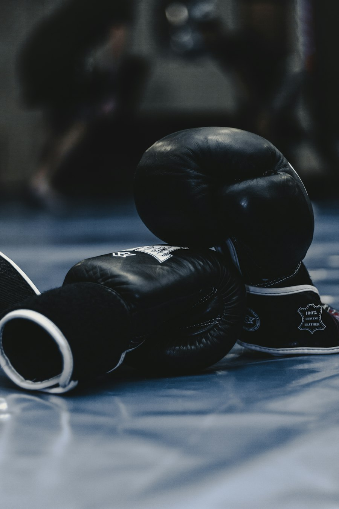

Esta página habla sobre las artes marciales mixtas y el esfuerzo de sus peleadores.

Las artes marciales mixtas combinan diferentes estilos de combate como el boxeo, el jiu-jitsu, la lucha y el muay thai. Además de fuerza, se necesita disciplina, constancia y respeto por el rival.